전산응용기계제도기능사 (2004-10-10 기출문제)
1과목: 기계재료 및 요소
1. 너트의 풀림 방지 방법이 아닌 것은?
- 와셔를 사용하는 방법
- 핀 또는 작은 나사 등에 의한 방법
- 로크 너트에 의한 방법
- 키에 의한 방법
(정답률: 67%)

2. 같은 재질이라 할지라도 재료의 크기에 따라 열처리 효과가 다른데 이것을 무엇이라 하는가?
- 담금질 효과
- 질량효과
- 시효경화
- 뜨임효과
(정답률: 71%)
3. 절삭공구강의 일종인 고속도강(18-4-1)의 표준성분은?
- Cr18%, W4%, V1%
- V18%, Cr4%, W1%
- W18%, Cr4%, V1%
- W18%, V4%, Cr1%
(정답률: 74%)
4. 다음 중 주철에 흑연화를 촉진시키는 원소가 아닌 것은?
- Si
- Al
- Ni
- Mn
(정답률: 49%)
5. 전동축의 동력전달 순서가 옳게 된 것은?
- 주축-중간축-선축
- 선축-중간축-주축
- 주축-선축-중간축
- 선축-주축-중간축
(정답률: 45%)
6. 코일스프링의 직경이 30㎜, 소선의 직경이 5㎜ 일 때 스프링 지수는?
- 0.17
- 2.8
- 6
- 17
(정답률: 85%)
7. 축을 설계할 때 고려하지 않아도 되는 것은 무엇인가?
- 축의 강도
- 피로 충격
- 응력 집중 영향
- 축의 표면조도
(정답률: 62%)
8. 훅의 법칙(Hooke's law)은 어느 점내에서 응력과 변형률이 비례하는가?
- 비례한도
- 탄성한도
- 항복점
- 인장강도
(정답률: 48%)
9. 가공용 황동의 대표적인 것으로 판, 봉, 관, 선 등을 만드는데 널리 사용되는 것은?
- 주석 황동
- 니켈 황동
- 6.4황동
- 7.3황동
(정답률: 33%)
10. 구리의 설명 중 올바른 것은?
- 비중은 8.96, 용융점은 1083℃, 체심입방격자이다.
- 변태점이 있고, 비자성체이며, 전기 및 열의 양도체이다.
- 황산, 염산에 쉽게 용해된다.
- 탄산가스(CO2), 습기, 해수에 강하다.
(정답률: 30%)
2과목: 기계가공법 및 안전관리
11. 다음 절삭 공구 중 비금속 재료에 해당하는 것은?
- 고속도강
- 탄소공구강
- 합금공구강
- 세라믹 공구
(정답률: 69%)
12. 다음 중 직접 전달 장치에 해당하는 것은?
- 벨트
- 체인
- 기어
- 로프
(정답률: 72%)
13. 다음 중 고용체의 종류가 아닌 것은?
- 침입형
- 치환형
- 규칙 격자형
- 면심 입방 격자형
(정답률: 48%)
14. 체결용 기계요소가 아닌 것은?
- 나사
- 키
- 브레이크
- 핀
(정답률: 87%)
15. 단면적이 100㎟인 강재에 300kgf의 전단하중이 작용할 때 전단응력(kgf/㎟)은?
- 1
- 2
- 3
- 4
(정답률: 90%)
16. 선반의 크기를 나타내는 방법으로 적당치 않은 것은?
- 베드위의 스윙
- 왕복대위의 스윙
- 양센터 사이의 최대거리
- 공작물을 물릴 수 있는 척의 크기
(정답률: 50%)
17. 알루미나 재질의 연삭 숫돌입자는?
- C
- GC
- WA
- D
(정답률: 59%)
18. 금긋기 바늘의 손질 및 보관시 유의사항으로 틀린 것은?
- 보관시 바늘끝에 코르크를 끼워 두면 산화되기 쉽다.
- 금긋기 바늘은 공작물보다 경질이어야 한다.
- 항상 중심축과 동심이 되도록 연삭되어 있어야 한다.
- 바늘끝의 연삭이 불량하면 공작물 표면에 그어지는 선의 굵기가 달라진다.
(정답률: 60%)
19. 절삭작업에서, 구성인선이 증가하는 경우는?
- 공구윗면 경사각을 크게 한다.
- 마찰계수가 작은 공구를 사용한다.
- 고속으로 절삭한다.
- 칩의 두께를 크게 한다.
(정답률: 42%)
20. 접시 머리 볼트의 머리가 묻히도록 하는 작업은?
- 카운터 싱킹
- 카운터 보링
- 리밍
- 스폿 페이싱
(정답률: 58%)
21. 슬로터(slotter)의 고정용 공구에 해당 되지 않는 것은?
- 맨드릴
- 클램프
- 앵글플레이트
- 계단블록
(정답률: 40%)
22. 절삭유에 관한 설명으로 틀린 것은?
- 일감의 열 팽창에 의한 정밀도의 저하를 방지한다.
- 공구날의 경도 저하를 방지한다.
- 마찰을 감소시키므로 가공면이 깨끗하다.
- 칩으로 하여금 다듬어진 면에 상처를 준다.
(정답률: 83%)
23. 오토콜리메이터의 부속품에 해당되지 않는 것은?
- 모터
- 변압기
- 평면경
- 조정기
(정답률: 34%)
24. 브라운 샤프형 분할판을 사용하여 원판주위에 5° 의 눈금으로 분할하려 할 때, 적당한 분할판의 구멍수는?
- 15 구멍
- 21 구멍
- 27 구멍
- 41 구멍
(정답률: 30%)
25. 방전가공에 쓰이는 가공전극의 요구조건이 아닌 것은?
- 가격이 저렴해야 한다.
- 전극 소모가 적어야 한다.
- 전기저항이 커야 한다.
- 기계가공이 용이해야 한다.
(정답률: 61%)
3과목: 기계제도
26. 다음 그림은 제3각법으로 나타낸 투상도이다. 평면도에 누락된 선을 완성한 것은?
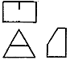
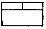
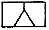
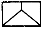
(정답률: 54%)
27. 직진운동이나 회전운동이 필요한 기계부품 조립에 적용하는 끼워맞춤으로 가장 좋은 것은?
- 헐거운 끼워맞춤
- 억지 끼워맞춤
- 영구조립 끼워맞춤
- 중간 끼워맞춤
(정답률: 47%)
28. 다음은 절단선을 사용하여 가상으로 대상물을 절단하여 단면도를 그릴 때의 설명이다. 잘못 설명된 것은?
- 절단한 곳을 나타내는 표시문자는 절단면에 수직하게 쓴다.
- 화살표는 단면을 보는 방향을 나타낸다.
- 절단한 곳을 나타내는 표시문자는 영문자의 대문자로 표시한다.
- 화살표와 글자기호는 생략할 수 있다.
(정답률: 29%)
29. 코일 스프링의 중간 부분을 생략할 때에 생략한 부분의 선지름의 중심선을 표시하는 선은?
- 가는 실선
- 굵은 실선
- 가는 1점 쇄선
- 파단선
(정답률: 46%)
30. 재료기호는 원칙적으로 3부분으로 구성되어 있다. 그 중 중간부분의 기호는 무엇을 나타내는가?
- 재질
- 제품명
- 최저 인장강도
- 열처리 상황
(정답률: 25%)
31. 산술(중심선) 평균거칠기는 표면거칠기의 표준값 다음에 어느 기호를 기입하는가?
- a
- s
- z
- u
(정답률: 68%)
32. IT기본공차는 몇 등급으로 구분되는가?
- 12
- 15
- 18
- 20
(정답률: 75%)
33. 다음 중 CAD시스템의 출력장치가 아닌 것은?
- 플로터(plotter)
- 프린터(printer)
- 디스플레이(display)
- 라이트 펜(light pen)
(정답률: 85%)
34. 핸들의 암(arm), 주물품의 리브(rib)의 형상을 도시하기 위한 단면도시법으로 적합한 것은?
- 전 단면도
- 부분 단면도
- 한쪽 단면도
- 회전도시 단면도
(정답률: 64%)
35. 컴퓨터에서 중앙처리장치의 기능 구성으로만 짝지워진 것은?
- 출력장치-입력장치
- 제어장치-입력장치
- 보조기억장치-출력장치
- 제어장치-연산장치
(정답률: 77%)
36. 기존의 오브젝트(object)를 어느 한 기점을 기준으로 비율에 따라 축소 또는 확대할 수 있는 도형변환 요소는?
- 스케일(scale)
- 시프팅(shifting)
- 카피(copy)
- 서피스(surface)
(정답률: 71%)
37. 다음 중 시리얼 데이터(serial data)전송의 구성 비트가 아닌 것은?
- stop bit
- data bit
- low bit
- parity bit
(정답률: 30%)
38. 컬러 디스플레이(Color display)에서 표현할 수 있는 색은 3가지 색의 혼합비에 의해 정해지는데, 그 3가지 색은 무엇인가?
- 빨강, 노랑, 파랑
- 빨강, 파랑, 초록
- 검정, 파랑, 노랑
- 빨강, 노랑, 초록
(정답률: 70%)
39. 다음 나사 제도법에 대한 설명 중 옳지 않은 것은?
- 암나사의 안지름은 굵은 실선으로 그린다.
- 불완전 나사부의 골을 나타내는 선은 축선에 대하여 30° 되게 그린다.
- 암나사의 탭 구멍의 드릴 자리는 118° 가 되게 가는 실선으로 그린다.
- 암나사의 골지름은 가는 실선으로 그린다.
(정답률: 52%)
40. 다음 중 기하 공차를 분류한 것으로 틀린 것은?
- 모양 공차
- 자세 공차
- 위치 공차
- 치수 공차
(정답률: 67%)
41. 도면을 접을 때 그 크기의 기준은 얼마로 하여야 하는가?(오류 신고가 접수된 문제입니다. 반드시 정답과 해설을 확인하시기 바랍니다.)
- A1(594×841)
- A2(420×594)
- A3(297×420)
- A4(210×297)
(정답률: 68%)
42. 다음 중 ISO 규격에 있는 관용 테이퍼 나사 중 테이퍼 암나사의 표시 기호는 어느 것인가?
- R
- Rc
- PT
- PS
(정답률: 63%)
43. 2개면의 교차 부분을 표시할 때 R1 < R2 일 때 평면도의 모양으로 옳은 것은?
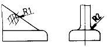
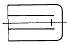
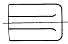
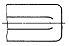
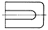
(정답률: 53%)
44. 기어의 도시 방법에 대한 설명으로 옳지 않은 것은?
- 이끝원은 굵은 실선으로 그린다.
- 피치원은 가는 1점 쇄선으로 그린다.
- 축에 직각인 방향으로 본 그림의 단면으로 표시할 때 이뿌리원은 가는 실선으로 그린다.
- 잇줄 방향은 보통 3 개의 가는 실선으로 그린다.
(정답률: 51%)
45. 치수기입의 원칙 중 적합하지 않은 것은?
- 치수는 선에 겹치게 기입해서는 안된다.
- 치수는 되도록 계산하여 구할 필요가 없도록 기입한다.
- 치수는 되도록 정면도, 평면도, 측면도에 분산하여 보기 쉽도록 기입한다.
- 대상물의 기능, 제작, 조립 등을 고려하여 필요하다고 생각되는 치수를 명료하게 기입한다.
(정답률: 74%)
46. 아래 그림은 무슨 치수기입인가?
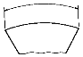
- 변
- 현
- 호
- 각도
(정답률: 74%)
47. CAD 프로그램의 좌표에서 사용되지 않는 좌표계는?
- 직교좌표
- 상대좌표
- 극좌표
- 원형좌표
(정답률: 71%)
48. 다음 기어의 생략도에서 스파이럴 베벨기어를 나타내는 것은?
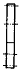
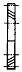
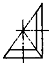
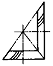
(정답률: 59%)
49. 베어링 호칭번호 608C2P6에서 P6이 뜻하는 것은?
- 등급 기호
- 안지름 번호
- 베어링 계열번호
- 베어링의 폭
(정답률: 64%)
50. 스퍼 기어에서 이끝원 지름(D)을 구하는 공식은? (단, m = 모듈, Z = 잇수)
- D = mZ
- D = π mZ
- D = m/Z
- D= m(Z+2)
(정답률: 51%)
51. 단면도 작성이 용이하며 물리적 성질(체적 등)의 계산이 가능한 3차원 모델링은?
- 솔리드 모델링
- 서피스 모델링
- 와이어 프레임 모델링
- 공간 모델링
(정답률: 74%)
52. 기계 요소 중에서 원칙적으로 길이 방향으로 절단하여 단면을 표시할 수 있는 것은?
- 기어의 이, 바퀴의 암
- 베어링, 부시
- 볼트, 작은 나사
- 리벳, 키
(정답률: 54%)
53. 파이프의 접속 표시를 나타낸 것이다. 관이 접속할 때의 상태를 도시한 것은?
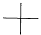
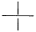
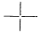
(정답률: 69%)
54. 보기의 그림에서 화살표 방향이 정면도일 때 평면도를 올바르게 표시한 것은?
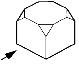
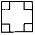
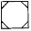
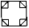
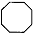
(정답률: 87%)
55. 다음 표를 보고 최대 틈새는 얼마인가?
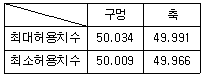
- 0.018
- 0.025
- 0.043
- 0.068
(정답률: 66%)
56. 표준 스퍼 기어에서 이의 높이(h)를 구하는 식은? (단, 모듈은 m이다.)
- h ≦ m
- h ≧ 0.25m
- h ≧ 1.25m
- h ≧ 2.25m
(정답률: 52%)
57. 기계제도 도면에 사용되는 척도의 설명이 틀린 것은?
- 도면에 그려지는 길이와 대상물의 실제 길이와의 비율로 나타낸다.
- 한 도면에서 공통적으로 사용되는 척도는 표제란에 기입한다.
- 같은 도면에서 다른 척도를 사용할 때에는 필요에 따라 그림 부근에 기입한다.
- 배척은 대상물보다 크게 그리는 것으로 2:1, 3:1, 4:1, 10:1 등 제도자가 임의로 비율을 만들어 사용한다.
(정답률: 66%)
58. 구름베어링의 호칭번호가 6203일 때 베어링의 안지름은?
- 15 ㎜
- 16 ㎜
- 17 ㎜
- 18 ㎜
(정답률: 75%)
59. 지름이 일정한 원통을 전개하려고 한다. 어떤 전개 방법을 이용하는 것이 가장 적합한가?
- 삼각형을 이용한 전개도법
- 방사선을 이용한 전개도법
- 평행선을 이용한 전개도법
- 사각형을 이용한 전개도법
(정답률: 44%)
60. 다음 치수 보조 기호에 관한 내용으로 틀린 것은?
- C : 45° 의 모따기
- SR : 구의 지름
- □ : 정사각형의 변
- ∅ : 지름
(정답률: 76%)